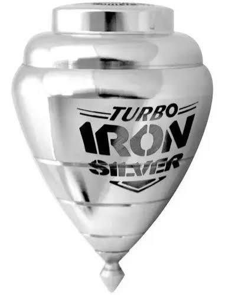

1. Introducción, Antecedentes y Objetivos
El trompo es uno de los juguetes tradicionales más emblemáticos en la cultura popular de México y el mundo, cuyo origen se remonta a las civilizaciones antiguas (como Grecia, Roma y Asia), donde se tallaba artesanalmente en madera o arcilla. Con el paso del tiempo, su fabricación evolucionó hacia materiales como los polímeros de alta densidad y aleaciones metálicas (como el aluminio o el acero en su punta), lo que permitió modificar su distribución de masa y mejorar su rendimiento.
Más allá de su valor cultural y recreativo, desde la perspectiva de la física clásica el trompo es un cuerpo rígido con simetría axial y geometría cónica que gira sobre un punto de apoyo fijo tras recibir un impulso mediante un cordel. Mientras rota a gran velocidad se mantiene firme y vertical (estado conocido coloquialmente como "dormido"); sin embargo, a medida que la fricción reduce su velocidad angular, el eje comienza a inclinarse y describir círculos alrededor de la vertical (precesión) hasta que finalmente cae.
Comprender este fenómeno es fundamental en la ingeniería moderna, ya que los mismos principios de conservación del momento angular se aplican en el diseño de giróscopos, sistemas de navegación aeroespacial y mecanismos de estabilización en robótica.
Objetivo General:
Determinar el comportamiento del movimiento rotacional de un trompo idealizado mediante el análisis cinemático y energético de múltiples variables (masa y velocidad angular inicial), describiendo su proceso de desaceleración hasta el reposo.
Objetivos Específicos:
- Calcular el momento de inercia aproximando el trompo a un cono sólido regular homogéneo, considerando masas asociadas a distintos materiales ideales (polímero/madera y aluminio).
- Cuantificar la pérdida de energía cinética rotacional a lo largo del tiempo bajo un modelo de torque de fricción constante simplificado.
- Comparar el tiempo total de giro y el comportamiento dinámico del sistema al variar la velocidad angular inicial y la masa del cuerpo.
2. Marco Teórico y Fundamentos Dinámicos
El estudio del movimiento de cuerpos rígidos con un punto fijo de apoyo es un problema clásico de la mecánica general. Desde una perspectiva física, el comportamiento del trompo se fundamenta en la interacción entre su rotación propia y los torques externos que actúan sobre él, divididos en tres fenómenos clave: la rigidez giroscópica (tendencia del eje a mantener su orientación), la precesión y la pérdida progresiva de estabilidad por fricción.
Ecuaciones del Modelo Idealizado (Haz clic en cada tarjeta para ver la fórmula)
1. Momento de Inercia (Iz)
Resistencia del cuerpo cónico a cambiar su estado de rotación sobre su eje principal.
↻ Clic para ver fórmulaCono Sólido Homogéneo
R: radio máximo (m)
2. Torque de Fricción (τf)
Segunda ley de Newton rotacional que relaciona el frenado con la desaceleración angular.
↻ Clic para ver fórmulaDinámica de Frenado
α: desaceleración angular (rad/s²)
3. Velocidad Angular ω(t)
Cinemática del frenado lineal (MCUV) en cualquier instante de tiempo.
↻ Clic para ver fórmulaEcuación Cinemática
t: tiempo transcurrido (s)
4. Momento Angular (L)
Magnitud responsable de la rigidez giroscópica que mantiene erguido al trompo.
↻ Clic para ver fórmulaCantidad de Movimiento Angular
ω: velocidad instantánea (rad/s)
5. Torque Gravitacional (τg)
Fuerza de gravedad actuando sobre el centro de masa cuando el eje se inclina.
↻ Clic para ver fórmulaTorque Externo por Peso
θ: ángulo de inclinación
6. Velocidad de Precesión (Ω)
Rapidez con la que el eje inclinado describe un cono alrededor de la vertical.
↻ Clic para ver fórmulaPrecesión Giroscópica
(aumenta conforme se frena)
7. Energía Cinética (Krot)
Energía mecánica almacenada por el giro que se degrada cuadráticamente.
↻ Clic para ver fórmulaEnergía de Rotación
Depende de ω al cuadrado
8. Potencia Disipada (P)
Tasa temporal a la que la fricción consume la energía cinética del trompo.
↻ Clic para ver fórmulaPérdida de Energía
τf: torque de fricción constante
Fenómenos Giroscópicos Complementarios (Referencia Conceptual)
Aunque nuestro modelo matemático simplifica el sistema como un cuerpo ideal en desaceleración lineal (MCUV), en la dinámica tridimensional completa de un trompo intervienen fenómenos físicos adicionales que determinan su comportamiento real. Se presentan a continuación de manera conceptual para delimitar el alcance de este estudio:
- Precesión Giroscópica: Es el movimiento cónico lento que describe el eje de simetría del trompo alrededor de la vertical. Ocurre porque el torque gravitacional (τg) actúa perpendicularmente al vector momento angular (L), desviando su dirección en lugar de derribarlo. Conforme la fricción reduce la velocidad de giro (ω), la velocidad de precesión (Ω) se incrementa hasta volverse inestable.
- Nutación: Es una pequeña oscilación periódica o "cabeceo" vertical superpuesto al movimiento de precesión. Se manifiesta cuando el trompo no se lanza en un equilibrio perfecto o cuando su velocidad angular cae por debajo del umbral crítico (ωc), provocando que el eje oscile arriba y abajo antes de colapsar.
- Fricción Aerodinámica y Rodadura: En condiciones reales, el frenado no es estrictamente constante; intervienen el arrastre viscoso del aire (proporcional al cuadrado de la velocidad) y el micro-deslizamiento de la punta sobre la superficie. Para mantener el enfoque en los principios del curso, ambos efectos se agrupan en un solo torque de fricción constante simplificado (τf).
- Desplazamiento del Punto de Apoyo: Si la punta metálica del trompo presenta un radio de curvatura apreciable en lugar de un punto matemático fijo, la fricción lateral hace que el cuerpo describa trayectorias en espiral sobre el plano horizontal mientras gira.
Recursos para profundizar en estos conceptos:
• Movimiento de Precesión (Wikipedia)
• Movimiento de Nutación (Wikipedia)
• Explicación lógica de la precesión giroscópica (Video en YouTube)
• Simulador interactivo: Revolución Mariquita (PhET Colorado)
3. Casos de Estudio y Resultados Experimentales
Selecciona un caso de estudio para visualizar las propiedades físicas del material ideal, su tabla de decaimiento cinemático y su comportamiento gráfico:
Caso 1: Lanzamiento Base (Polímero / Madera)
Masa (m): 0.050 kg (50 g) | Velocidad Inicial (ω0): 150 rad/s (1,432 RPM)
Momento de Inercia (Iz): 1.35 × 10-5 kg·m² | Desaceleración (α): -3.0 rad/s²
Comportamiento: Referencia estándar. Almacena 0.1519 J de energía inicial y mantiene el equilibrio hasta detenerse a los 50.0 segundos.
| Tiempo (s) | 0 | 5 | 10 | 15 | 20 | 25 | 30 | 35 | 40 | 45 | 50 |
|---|---|---|---|---|---|---|---|---|---|---|---|
| ω (rad/s) | 150 | 135 | 120 | 105 | 90 | 75 | 60 | 45 | 30 | 15 | 0.0 |
| Krot (J) | 0.1519 | 0.1230 | 0.0972 | 0.0744 | 0.0547 | 0.0380 | 0.0243 | 0.0137 | 0.0061 | 0.0015 | 0.0000 |

Caso 2: Masa Incrementada (Aluminio Ideal)
Masa (m): 0.100 kg (100 g) | Velocidad Inicial (ω0): 150 rad/s (1,432 RPM)
Momento de Inercia (Iz): 2.70 × 10-5 kg·m² | Desaceleración (α): -1.5 rad/s²
Comportamiento: Al duplicar la masa, la inercia y la energía inicial (0.3038 J) se duplican, extendiendo el giro hasta los 100.0 segundos.
| Tiempo (s) | 0 | 10 | 20 | 30 | 40 | 50 | 60 | 70 | 80 | 90 | 100 |
|---|---|---|---|---|---|---|---|---|---|---|---|
| ω (rad/s) | 150 | 135 | 120 | 105 | 90 | 75 | 60 | 45 | 30 | 15 | 0.0 |
| Krot (J) | 0.3038 | 0.2460 | 0.1944 | 0.1488 | 0.1094 | 0.0759 | 0.0486 | 0.0273 | 0.0122 | 0.0030 | 0.0000 |
Caso 3: Velocidad Reducida (Polímero / Madera)
Masa (m): 0.050 kg (50 g) | Velocidad Inicial (ω0): 100 rad/s (955 RPM)
Momento de Inercia (Iz): 1.35 × 10-5 kg·m² | Desaceleración (α): -3.0 rad/s²
Comportamiento: Al iniciar con menor impulso, la energía cae cuadráticamente a 0.0675 J y el trompo se detiene prematuramente a los 33.3 segundos.
| Tiempo (s) | 0 | 5 | 10 | 15 | 20 | 25 | 30 | 33.3 |
|---|---|---|---|---|---|---|---|---|
| ω (rad/s) | 100 | 85 | 70 | 55 | 40 | 25 | 10 | 0.0 |
| Krot (J) | 0.0675 | 0.0488 | 0.0331 | 0.0204 | 0.0108 | 0.0042 | 0.0007 | 0.0000 |
Gráfica Comparativa de Desaceleración Angular (ω vs t)
4. Análisis Comparativo de Variables
5. Simulación Computacional 3D (Web VPython)
Interactúa con el modelo tridimensional programado en Web VPython para observar en tiempo real la rotación propia, la precesión y el colapso del trompo al cruzar el umbral crítico de 35 rad/s:
• Flecha Verde (L): Vector de momento angular; observa cómo se acorta conforme disminuye la velocidad.
• Flecha Roja (τ): Torque gravitacional perpendicular que impulsa el giro cónico (precesión).
• Botones superiores: Alterna entre los 3 casos de estudio o activa la cámara rápida (x3) para comprobar los tiempos de paro.
Actividad Interactiva: Pon a Prueba lo Aprendido
¿Comprendiste cómo influyen la masa, el momento de inercia y la velocidad en la estabilidad del trompo? Participa en nuestro cuestionario interactivo de 15 preguntas para poner a prueba los conceptos analizados en este proyecto.
15 preguntas sobre cinemática rotacional (MCUV), momento de inercia y casos de estudio.
Abrir Quiz en Kahoot
6. Conclusiones
- Estabilidad Giroscópica: La verticalidad del trompo ("estado dormido") depende directamente de la magnitud de su momento angular (L = Izω). Conforme la fricción frena el giro, la velocidad de precesión (Ω) aumenta inversamente hasta que el eje pierde estabilidad y cae.
- Efecto de la Masa: Duplicar la masa del cuerpo duplica su momento de inercia y su resistencia al frenado frente a un torque constante, duplicando también su tiempo de giro estable.
- Influencia de la Velocidad Inicial: Debido a su relación cuadrática con la energía cinética rotacional, la velocidad de lanzamiento es el factor más determinante para prolongar la duración del movimiento.
- Validación del Modelo: Aproximar el trompo a un cono sólido ideal bajo un régimen de MCUV proporciona una base matemática precisa y accesible para predecir su comportamiento en entornos virtuales 3D.
7. Referencias Bibliográficas
- Beer, F. P., Johnston, E. R., Mazurek, D. F., & Cornwell, P. J. (2013). Mecánica vectorial para ingenieros: Dinámica (10.ª ed.). McGraw-Hill Education.
- Cross, R. (2013). The rise and fall of spinning tops. American Journal of Physics, 81(4), 280–289. https://doi.org
- Cross, R. (s.f.). Spinning Tops [Repositorio de datos experimentales de física]. School of Physics, University of Sydney. https://usyd.edu.au
- PhET Interactive Simulations. (s.f.). Revolución Mariquita (Ladybug Revolution) [Simulación interactiva]. University of Colorado Boulder. https://colorado.edu
- Serway, R. A., & Jewett, J. W. (2018). Física para ciencias e ingeniería (10.ª ed., Vol. 1). Cengage Learning.
- Sherwood, B., & Chabay, R. (s.f.). Web VPython (GlowScript) [Entorno de programación y modelado 3D]. https://glowscript.org
- Simonelli, I. (s.f.). How to measure/calculate moment of inertia and energy in a spin top [Video]. YouTube.
- Tanrıverdi, V. (2023). Motion of a heavy symmetric top with friction. Revista Mexicana de Física, 69(1), 010701. https://doi.org
- Walsh, T. (s.f.). Rotation, Sliding, Rolling, and Friction [Simulación interactiva]. oPhysics: Interactive Physics Simulations. https://ophysics.com
- Canal de divulgación física. (2020). Gyroscopic effect and precession explained [Video]. YouTube. https://youtube.com